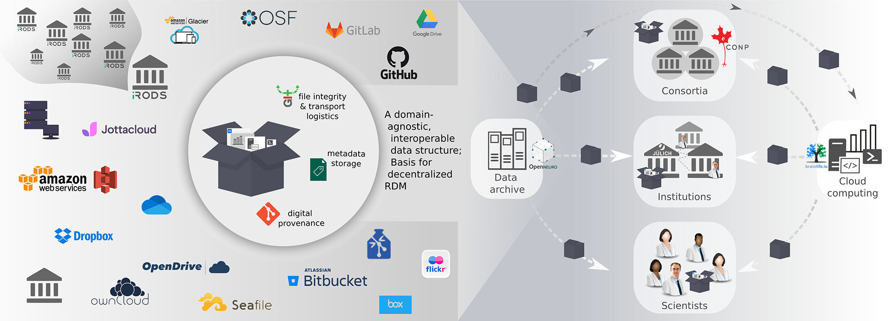
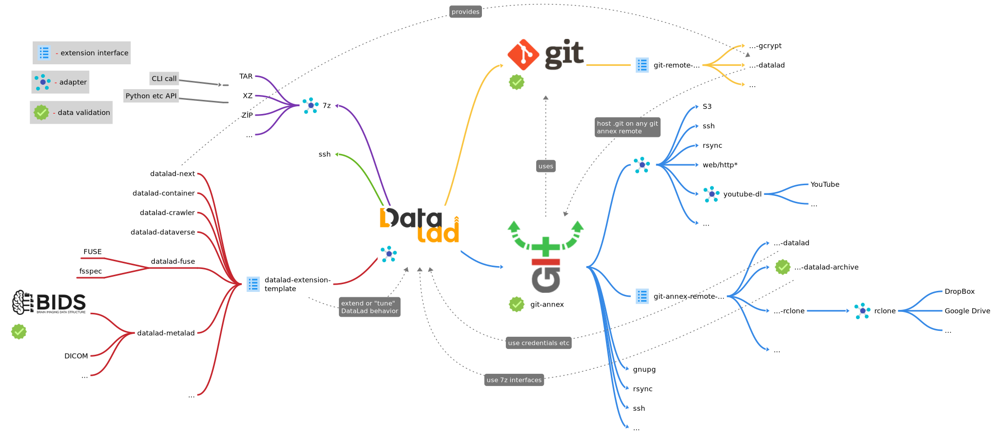
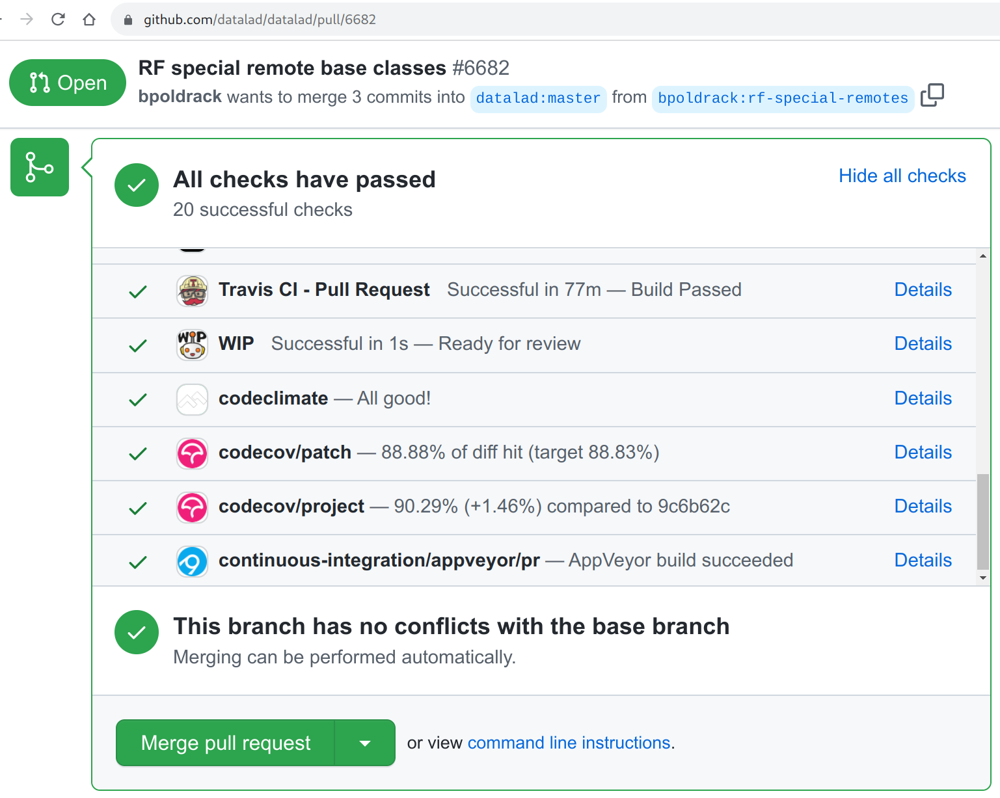
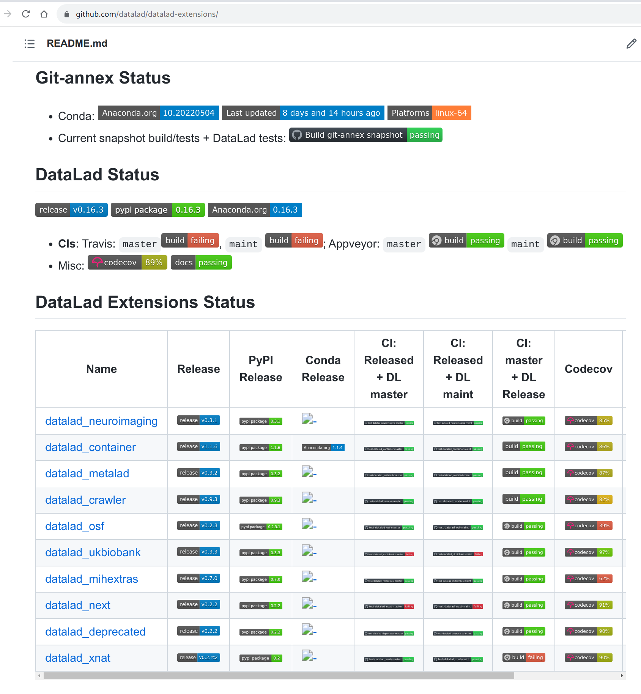

"What's in the DataLad sandwich" AKA DataLad "ecosystem"
 @yarikoptic
@yarikoptic


Why version control?
|
 Borrowed from PhD Comics 1531.
Borrowed from PhD Comics 1531.
|
From prehistoric times...

When it began for us
- 2005 Apr 07 - First commit in git
- 2007 May 24 - First commit in PyMVPA
- 2008 Feb 08 - GitHub founded
- 2010 Oct 09 - First commit in git-annex
- 2013 May 21 - First commit in DataLad (gitweb)
First use-case: Childhood times cartoons

The idea of a website crawler was born
graph TB %% datalad --> git-annex --> git website datalad -->|scrapes|website(website) datalad[gitweb] -->|populates annex|git-annex[git-annex addurl] datalad --> git1[git commit] git-annex --> git2[git] user --> git-annex2[git annex get] classDef green fill:#40bf4c,stroke:#333,stroke-width:1px; classDef orange fill:#ffa200,stroke:#333,stroke-width:1px; classDef red fill:#f44d27,stroke:#333,stroke-width:1px; class datalad orange class git-annex green class git-annex2 green class git1 red class git2 red
And that "crawled" git-annex repository still "works"!

A problem in our other project...

The state of "tech" back then
- inefficient distribution via tar/zip/...-balls
- absent versioning of data
derived and/or curated data does change!
- code version control systems are inadequate for data
duplication, monolithic storage, etc.
- TBs of data already shared!
infeasible to duplicate them for re-distribution
- absent generic data distributions
no efficient ways to install and upgrade
- cacophony of authorization schemes, interfaces, protocols
- absent data testing
data can and does have
bugs
- difficulty to share new or derivative data
shareable? some is not! where to host? how to "link" back?
From an email to a proposal
- 2013 Dec 30 - Email to Joey

From an email to a proposal
- 2013 Dec 30 - Email to Joey
- 2014 Jan 09 - M&Y started to work on proposal to CRCNS NSF/BMBF
- 2014 Jan 27 - ... submitted proposal
- 2014 Jun 27 - ... were requested to clarify
- 2014 Sep 01 - ... started to work on DataLad
and Joey continued enhancing git-annex
- with
--batchand--jsonto streamline use of git-annex by DataLad - with support for
git-annex-remote-*external special remotes,
and DataLad came up withgit-annex-remote-datalad
to facilitate access to resources requiring authenticationgit-annex-remote-datalad-archives
to facilitate access content from within archives.
More layers to the sandwich
Invocations to get a file from a ///crcns dataset
graph TB
%% datalad --> git-annex --> git
user --> datalad[datalad get file] --> git-annex[git-annex get file] -.-> git-annex-remote-datalad-archive --> git-annex2[git-annex get --key XXX.tar.gz] -.-> git-annex-remote-datalad
datalad --> git1[git]
git-annex --> git2[git]
git-annex2 --> git3[git]
classDef green fill:#40bf4c,stroke:#333,stroke-width:1px;
classDef orange fill:#ffa200,stroke:#333,stroke-width:1px;
classDef red fill:#f44d27,stroke:#333,stroke-width:1px;
class datalad orange
class git-annex-remote-datalad-archive orange
class git-annex-remote-datalad orange
class git-annex green
class git-annex2 green
class git-annex3 green
class git-annex4 green
class git red
class git1 red
class git2 red
class git3 red
class git4 red
class git5 red
2017: DataLad crawler pipeline


Crawler's workflow in Git branches
%% comment: show the flow from incoming to master
%% %%{init: {'gitGraph': { 'mainBranchName': 'incoming', 'mainBranchOrder': 3}} }%%
gitGraph:
branch master order: 1
branch git-annex order: 4
commit id: "git annex init"
checkout master
commit id: ".datalad/ etc"
checkout git-annex
commit id: "content from URLs"
checkout incoming
commit id: "original content (tarballs)" tag: "incoming/1.0"
branch processed order: 2
checkout git-annex
commit id: "processed content here"
checkout processed
commit id: "processed incoming (extracted)" type: HIGHLIGHT
checkout master
merge processed tag: "1.0.0" id: "just a merge"
commit id: "manually fixed content" tag: "1.0.1"
checkout git-annex
commit id: "update #1 from URLs"
checkout incoming
commit id: "update #1" tag: "incoming/1.1"
checkout git-annex
commit id: "update #1 here"
checkout processed
merge incoming id: "processed update #1" type: HIGHLIGHT
checkout master
merge processed id: "merged processed update #1" tag: "1.1.0"
checkout git-annex
commit id: "update #2 from URLs"
checkout incoming
commit id: "update #2" tag: "incoming/1.2"
checkout git-annex
commit id: "update #2 here"
checkout processed
merge incoming id: "processed update #2" type: HIGHLIGHT
checkout master
merge processed id: "merged processed update #2" tag: "1.2.0"
To the date such organization is used in various datasets to formalize flow of the data through the branches.
2017-ish: OpenfMRI collection

CYO: Crawl Your Own
https://docs.datalad.org/projects/crawler/DataLad of 2017-ish
 See also FOSDEM2020 talk by M.Hanke:
DataLad vs Git/Git-annex for modular data management
See also FOSDEM2020 talk by M.Hanke:
DataLad vs Git/Git-annex for modular data management
DataLad Realizations & "Shortcomings"
- Git and git-annex are great: have or could have features added we have done the right choice!
- DataLad is not just a crawler - it is a data management platform we have done the right choice!
- Domain Born: neuroscience flavoring repels audience from other domains
- Feature Creep: Crawler + Data management + Metadata management + Neuroscience + ... heavy set of dependencies, longer CI runs, harder to work, ...
- No easy way to extend withing DataLad CLI/Python namespace harder to "build on top", extend, experiment, ...
DataLad extensions mechanism was born!

A data management suite that makes data access and management as easy as managing code and software!
|
DataLad: distributed system for joint management of code, data, and their relationship. Y. Halchenko, K. Meyer, B. Poldrack, D. Solanky, A. Wagner, J. Gors, D. MacFarlane, D. Pustina, V. Sochat, S. Ghosh, C. Mönch, C. Markiewicz, L. Waite, I. Shlyakhter, A. de la Vega, S. Hayashi, C. Häusler, J.-B. Poline, T. Kadelka, K. Skytén, D. Jarecka, D. Kennedy, T. Strauss, M. Cieslak, P. Vavra, H.-I. Ioanas, R. Schneider, M. Pflüger, J. Haxby, S. Eickhoff, and M. Hanke. Journal of Open Source Software, 6(63):3262, jul 2021. DOI: 10.21105/joss.03262 |
 in brief
in brief
- A command-line tool with Python API
- Build on top of Git and Git-annex
- Allows...
- ... version-control arbitrarily large content,
- ... easily operate nested datasets (git/git-annex repositories with a UUID),
- ... easily share and obtain data (note: no data hosting!),
- ... carry out (computationally) reproducible data analysis,
- ... and much more
- Completely domain-agnostic
- Can be extended with domain-specific functionality
For more: Read the DataLad Handbook 
Like "Big Data"?
Meet one of the "largest" Git "repositories"
Over 6,000 Git repositories as subdatasets, with access to over 500TB of (mostly) neural data

It even swallowed the glorious https://singularity-hub.org

DataLad: Decentralized Research Data Management
| In defense of decentralized research data management, Michael Hanke, Franco Pestilli, Adina S. Wagner, Christopher J. Markiewicz, Jean-Baptiste Poline and Yaroslav O. Halchenko, NeuroForum, 2021, DOI: 10.1515/nf-2020-0037 |
DataLad for users
- minimized tedious human IO to obtain data
- harmonized management of all human digital artifacts/data
- facilitated modularity, integration and re-use
- provided guarantees of data integrity
- facilitated verification of data availability
- enabled collection of annotated and re-executable provenance
- gave an awesome good night read: handbook.datalad.org
- hours of audio/video enrichment: youtube.com/c/datalad
- ... collaboration, etc ...
Handbook is a
|
comprehensive user documentation at (handbook.datalad.org) |
|
 |
|
 |
|
 |
|
DataLad for its developers:
- Layering of technologies:
- Base technologies: git, ssh, rsync, rsync, rclone, ...
- Data logistics: git-annex
- Core product: DataLad
- Downstream projects: DataLad extensions, OpenNeuro, CONP, ...
- Cacophony of deployment scenarios:
- OSes: GNU/Linux, OS X, Windows
- Filesystems: "OS default", network (NFS), HPC (Lustre), ...
Where are the "standards" and "validation" in this sandwich?
DataLad et al.
But what about Validation of DataLad itself?
DataLad: all changes are tested
DataLad extensions are tested against DataLad daily!
git-annex is built and tested (against DataLad) daily!

con/tinuous archives all the logs and builds